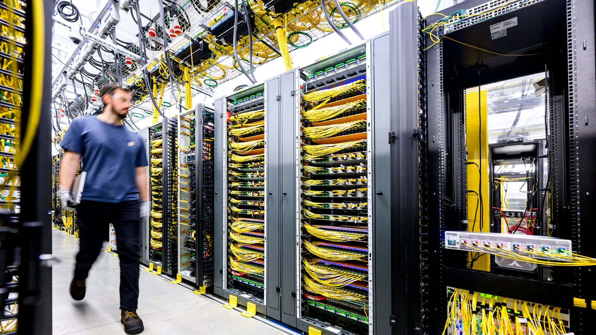

Executive Summary
이 글은 2026년 10월 2일 아마존이 올린 글 한 편과, 같은 회사가 인디애나주에서 받은 세금 감면 기록을 나란히 읽는다. 글을 쓴 사람은 AWS 최고경영자 맷 가먼이다. 지자체와 맺던 비밀유지계약을 더는 쓰지 않겠다고 밝혔고, 5년간 10억 달러를 데이터센터가 들어선 지역에 쓰는 'Built Together' 프로그램을 내놓았다. 전력 사용량, 전력 효율, 물 사용량, 물 효율, 무탄소 전력 비중을 해마다 공개하겠다는 약속도 함께 적었다.
약속 목록에 오르지 않은 항목도 있다. 세금이다. 마이크로소프트는 올해 1월에 지방 재산세 감면을 더 요청하지 않겠다고 선언했지만 아마존은 같은 약속을 하지 않았고, 자사가 거의 모든 지역에서 최대 납세자라는 이유를 들었다. 발표문이 세금을 말하지 않은 것은 아니다. 카운티에 낼 세금이 30억 달러를 넘는다는 추산은 적혀 있고, 그 카운티에서 깎인 금액은 적혀 있지 않다. 인디애나주 경제개발공사가 공개한 기록을 보면 아마존이 2025년 한 해 그 주에서 받은 판매·사용세 감면은 5억 6,100만 달러다. Built Together의 연평균 지출 2억 달러보다 많다.
1절과 2절, 그리고 3절 앞부분까지는 발표문과 공시 기록과 보도에 적힌 사실이다. 3절 뒷부분과 4절은 그 사실을 데이터를 다루는 사람의 눈으로 다시 읽은 이 글의 해석이다.

주요 수치
이 이야기에 붙는 숫자는 네 개다. 앞의 둘은 아마존이 한 지역에서 받은 돈과 전국에 쓰겠다는 돈이다. 뒤의 둘은 그런 거래를 주민이 확인할 수 있는 주의 수다. 돈을 누가 받았는지 공시하는 주와, 약속한 일자리가 실제로 생겼는지까지 보고하는 주다.
출처: 인디애나주 경제개발공사 공시(13News 보도, 2026), Good Jobs First "Cloudy Data, Costly Deals"(2025-11), 아마존 공식 발표(2026-10-02).
5억 6,100만 달러
2025년 아마존의 인디애나주 세금 감면
2024년 5,050만 달러에서 1년 만에 1,011% 늘었다. 시설 한 곳이 아니라 주 전체에서 아마존이 받은 합계다
2억 달러
Built Together 연평균 지출
5년간 10억 달러를 나눈 값이고, 아마존의 2026년 설비투자 계획 2,200억 달러의 0.1% 수준이다
11곳
수혜 기업 이름을 공시하는 주
데이터센터 전용 세제를 둔 주는 적어도 36곳이다. 금액까지 공개하는 곳은 그 11곳 가운데 5곳이다
0곳
약속 고용과 실제 고용을 함께 보고하는 주
약속한 일자리가 실제로 생겼는지 주민이 맞대어 볼 수 있는 주는 미국에 아직 없다
10월 2일 아마존이 접은 것
금요일에 올라온 글의 한 문장이 이 발표의 머리에 해당한다. "우리는 프로젝트에서 함께 일하는 정부 기관과 더 이상 비밀유지계약을 쓰지 않는다." 데이터센터를 유치할 때 기업과 지자체가 맺어 온 계약 관행을 두고 한 말이다. 주민은 어떤 회사가 들어오는지, 전기와 물을 얼마나 쓰는지, 세금을 얼마나 덜 내는지를 공사가 시작된 뒤에야 알게 되는 일이 흔했다. 문장이 상대로 지목한 쪽은 정부 기관이다. 토지주나 개발사처럼 민간을 상대로 맺는 계약은 이 문장 바깥에 있다.
함께 나온 것이 'Built Together'다. 5년간 10억 달러 이상을 데이터센터가 들어선 지역에 쓴다는 계획이고, 쓰는 곳은 세 갈래로 묶였다. 교육과 직업훈련에서는 5년 안에 30만 명 이상을 무료 학위 과정에 연결하겠다고 적었다. 전용 훈련센터는 지금 세 곳이 돌아가고 여섯 곳이 공사 중이다. 여기에 열여섯 곳을 더 지어 스물다섯 곳으로 만들고, 2028년까지 해마다 10만 명을 가르치겠다는 계획이다. 에너지와 물에서는 학교와 공공건물 300곳 이상, 주택 3만 가구 이상의 효율을 손봐 매달 나가는 전기요금을 20~40%, 가구당 한 해 700달러쯤 줄이겠다고 했다. 세 번째는 지역이 쓸 곳을 직접 정하는 기금으로, 데이터센터가 있는 지역마다 해마다 수백만 달러 규모다.
공개 약속은 다섯 항목이다. 전력 사용량, 전력 효율, 물 사용량, 물 효율, 그리고 무탄소 전력의 비중을 해마다 내놓겠다는 것이다. 발표문은 자사 성적을 몇 개 미리 적어 두기도 했다. 2025년 전 세계 데이터센터 평균 전력효율지수(PUE)가 1.14로, 업계 평균 1.25와 기업 자체 전산실 평균 1.63보다 낮다는 것이다. 이 지수는 전산 장비가 쓴 전기 1에 냉방과 조명 같은 부대 설비가 얼마나 더 붙는지를 나타내는 값이라 1에 가까울수록 좋다.
글에 적히지 않은 날짜도 하나 있다. 사흘 전인 9월 29일, 미국 하원 법제사법위원회 간사 제이미 래스킨이 아마존 최고경영자 앤디 재시에게 공개 질의서를 보냈다. 첫 문장은 이렇게 시작한다. "아마존은 왜 주와 지방 공무원에게 데이터센터 사업을 자기 지역 주민과 논의하지 못하도록 비밀유지계약에 서명하라고 요구하는가." 같은 날 구글과 메타와 오라클에도 같은 질의가 갔다. 다섯 번째 질문은 마이크로소프트가 이미 지자체와의 비밀유지계약을 중단했다는 사실을 들며 아마존은 왜 계속 요구하느냐고 물었고, 답변 기한은 10월 13일이었다. 첫 번째 질문은 미국에서 보유하거나 운영하거나 제안한 데이터센터를 빠짐없이 열거하고 시설마다 완전 가동 시 예상 전력 사용량과 물 사용량을 적어 내라는 것이었다.
발표가 나온 배경도 같은 글에 적혀 있다. 가먼은 전국에서 검토 중인 데이터센터 건설 유예 조치가 100건을 넘는다고 셈했고, 그 조치들이 실제로 시행되면 "미국이 이 경쟁에서 스스로 패배의 표를 끊는 셈이 될 수 있고 그 결과는 여러 세대 동안 남을 것"이라고 썼다. 반대 여론의 출처를 두고는 "여러 나라가 우리를 늦추려고 데이터센터에 관한 잘못된 정보를 미국에 의도적으로 심고 있다는 보도가 널리 있다"고 적었다. 이 주장에는 반론이 먼저 나와 있다. 폴리티팩트는 지난달 데이터센터 반대 여론에서 외국 영향이 차지하는 몫이 과장됐으며 문제의 계정들이 넓은 독자에게 닿았다는 흔적은 거의 없다고 보도했다.
접지 않은 것은 세금이다
비밀유지계약 중단에는 조건이 하나 붙어 있다. 앞으로 맺을 계약에만 적용되고 이미 맺은 계약은 다시 들여다보지 않는다는 것이다. 아마존은 기존 계약 대부분이 프로젝트가 공개되는 순간 효력을 잃기 때문이라고 설명했다. 마이크로소프트는 3월 18일에 다른 쪽을 택했다. 전 세계에서 효력이 남은 계약을 찾아 해당 지자체에 연락해 해지하겠다고 했고, 다만 토지 매입처럼 민간을 상대로 하는 계약에는 계속 쓴다는 단서를 달았다.
이 차이가 무엇을 뜻하는지는 인디애나주 사우스벤드에서 볼 수 있다. 시 공공사업국장과 시 엔지니어가 뉴칼라일 데이터센터를 두고 아마존과 비밀유지계약에 서명한 때는 2023년 12월이고, 만료일은 2026년 12월이다. 시장 제임스 뮬러는 이 사실이 알려진 뒤인 9월 16일 행정명령을 내려 시 직원이 데이터센터 관련 비밀유지계약을 맺는 일을 금지했다. 아마존의 발표는 그로부터 16일 뒤에 나왔고, 사우스벤드에 남아 있는 계약은 어차피 올해 12월에 끝난다.
세금 쪽에서는 아마존이 선을 그었다. 마이크로소프트는 1월 13일에 지방 재산세 감면을 더 요청하지 않겠다고 선언했는데, 아마존이 같은 약속을 할 의향이 있는지 묻자 그렇게 하지 않았다. 자사가 사업하는 거의 모든 지역에서 최대 납세자이고, 감면은 지자체가 프로젝트를 끌어오려고 먼저 내놓는 것이라는 설명이었다.
마이크로소프트의 선언은 같은 인디애나주의 라포트에서 먼저 현실이 됐다. 시와 교육청은 3월 3일에 기존 합의를 갈아 끼웠다. 40년 동안 세금 대신 최대 1억 달러를 내기로 했던 약정을 거두고, 마이크로소프트가 재산세를 전액 내되 시 재개발위원회가 그 세수의 15%를 20년 동안 라포트 교육청으로 돌리는 쪽으로 바꾼 것이다.
아마존이 받는 감면의 크기를 올해 처음 숫자로 볼 수 있게 된 주가 인디애나다. 인디애나주 경제개발공사는 아마존이 2024년에 5,050만 달러, 2025년에 5억 6,100만 달러의 주 판매·사용세 감면을 신고했다고 밝혔다. 1년 사이 1,011% 늘어난 값이다. 인디애나가 지금까지 공개한 데이터센터 감면 총액은 6억 5,500만 달러이고 수혜 기업은 여섯 곳인데, 그중 아마존의 두 해 합계 6억 1,150만 달러가 93%를 차지한다. 이 수치는 주 전체에서 아마존이 받은 합계이지 시설 한 곳에서 받은 금액이 아니다. 다만 2025년에 아마존이 인디애나에서 가동하던 주력 캠퍼스는 110억 달러 규모의 뉴칼라일 한 곳이었다.
이 숫자가 공개된 경위도 짚어 둘 만하다. 주에서 먼저 내놓은 것이 아니다. 인디애나폴리스 방송사 13News의 추적 보도와 감시단체 Good Jobs First의 문제 제기가 겹친 뒤에야 나왔고, 주 회계총괄실은 감면 자료가 경제개발공사에 보고돼 있었지만 연차 재무보고서로 넘어오는 경로가 빠져 있었다고 해명했다.
가먼이 세금 이야기를 한 번 꺼내기는 한다. 고른 사례가 하필 뉴칼라일이 속한 세인트조지프 카운티다. 그 카운티에서 아마존이 낼 세금이 30억 달러를 넘을 것으로 추산되며, 같은 기간 그 땅의 이전 용도가 냈을 세금은 120만 달러라고 적었다. 앞의 5억 6,100만 달러와는 종류가 다른 세금이다. 이쪽은 카운티가 걷는 재산세이고 앞쪽은 주가 걷는 판매·사용세다.
그 재산세에 붙는 숫자는 말하는 사람마다 다르다. 2024년 8월 카운티 의회가 승인한 조건은 건물 재산세를 10년 동안 50% 깎아 주고 서버와 장비에는 35년 동안 85% 면제를 주는 것이다. 카운티 경제개발국장 빌 샬리올은 건물 16개 동과 110억 달러 투자를 전제한 모형에서 35년 동안 세금이 약 40억 달러 걷히고 그중 16억~17억 달러가 깎이며 22억~23억 달러가 지역에 남는다고 설명했다. 올해 3월 카운티 의회 공화당 의원 다섯 명 가운데 넷은 같은 계약을 "35년 40억 달러 감면"이라 부르며 아마존에 재협상을 요구하는 편지를 보냈다. 아마존은 인터뷰에 응하지 않았고, 대신 900명 넘게 고용했고 도로 개선에 700만 달러 넘게 냈으며 지역 사업 31건에 25만 달러 넘게 지원했다는 자료를 보내 왔다. 같은 계약에 40억이라는 수가 두 번 나오는데 뜻이 서로 다르다. 카운티는 35년 동안 걷힐 세금 총액이라 하고, 재협상을 요구한 의원들은 깎아 주는 금액이라 한다. 여기에 아마존이 내놓은 30억과 카운티 모형의 16억~17억이 겹친다. 어느 범위를 센 값인지는 숫자를 내놓는 쪽이 각자 정한다.
앞에서 본 두 금액으로 돌아가면 이렇게 된다. 아마존이 전국의 데이터센터 지역에 쓰겠다고 약속한 돈은 한 해 2억 달러이고, 인디애나주 한 곳에서 2025년에 내지 않은 판매·사용세는 5억 6,100만 달러다.
▲ 아마존 발표문의 지역 투자액과 인디애나주 공시 기록을 이 글이 같은 축에 올렸다.
두 금액을 그대로 빼서 손익을 계산하면 틀린다. 지역 투자는 아마존의 지출이고 세금 감면은 공공이 포기한 세수여서 장부의 자리가 다르다. 그래도 나란히 둘 이유는 있다. 지역이 아마존에서 받는 것과 아마존에 주는 것이 각각 얼마인지를 주민이 한 화면에서 본 적이 거의 없기 때문이다. 둘 중 하나는 보도자료로 알려지고, 다른 하나는 방송사가 몇 달을 쫓아야 나온다.
공개된 숫자를 누가 채점하는가
인디애나에서 일어난 일은 예외가 아니라 기본값에 가깝다. Good Jobs First가 2025년 11월에 낸 "Cloudy Data, Costly Deals"는 데이터센터를 겨냥한 세제 혜택을 둔 주는 적어도 36곳인데 수혜 기업의 이름을 공시하는 주는 11곳뿐이라고 집계했다. 애리조나, 코네티컷, 일리노이, 인디애나, 미네소타, 네바다, 오하이오, 펜실베이니아, 텍사스, 워싱턴, 위스콘신이다. 그 11곳도 끝까지 가지는 않는다. 금액까지 공개하는 곳은 다섯이고, 기업이 약속한 일자리 수를 공개하는 곳은 넷이며, 약속한 일자리와 실제로 생긴 일자리를 함께 보고하는 곳은 하나도 없다.
이름을 공시하는 11곳에서도 최종 모회사까지 밝히는 주는 없다. 혜택은 프로젝트마다 세운 유한책임회사 이름으로 들어가고, 그 뒤에 누가 있는지는 따로 찾아야 한다. 인디애나가 올해 공개한 목록에도 구글 자회사인 Hatchworks LLC 같은 이름이 섞여 있다. 수익률을 계산해 본 몇몇 주는 데이터센터 판매세 면제에 1달러를 쓸 때 52센트에서 70센트를 잃는다는 결론을 냈다.
이 집계에는 테두리가 하나 더 쳐져 있다. 보고서가 센 것은 주 차원의 판매·사용세 면제이고, 뉴칼라일처럼 카운티나 시가 따로 맺는 재산세 감면은 애초에 세는 대상이 아니다. 세인트조지프 카운티가 35년에 걸쳐 깎아 주기로 한 16억~17억 달러는 36개 주를 다 뒤져도 이 그림 안에 나타나지 않는다. 지금 가장 잘 정리된 전국 집계조차 주민이 실제로 내주는 돈의 일부만 담고 있다는 뜻이다.
텍사스에서는 검증이 한참 뒤에 온다. 주 회계감사관실이 올해 상원 재정위원회에서 밝힌 바로는 인증받은 데이터센터 사업이 138건인데, 그중 5년 차에 도달해 실제 점검을 받은 것은 20건이다. 적합 판정이 6건, 부적합 판정이 6건이고 나머지는 심사 중이다. 부적합 가운데 넷 이상은 요구된 일자리를 만들지 못했고, 하나는 필요한 면적을 짓지 못했으며, 하나는 전력 공급 계약이 깨졌다고 스스로 신고했다. 텍사스 법은 기업이 요건을 채우겠다고 스스로 서약하면 혜택을 즉시 주고, 독립적인 확인은 5년이 지난 뒤의 사후 감사로 미룬다. 텍사스가 2025 회계연도에 이 면제로 잃은 세수는 10억 달러이고, 주에서 2025년에 내놓은 전망으로는 앞으로 2년 동안 32억 달러가 더 나간다. 그러면서 공개하는 정보는 기업 이름뿐이다.
3.1성적표에 아직 비어 있는 세 칸
아마존이 적은 것은 무엇을 공개할지와 얼마나 자주 공개할지다. 항목은 다섯 가지로 이름이 붙었고 주기는 해마다로 정해졌다. 남은 칸은 셋이다.
- 범위. 데이터센터 한 곳씩의 수치인지, 지역별 묶음인지, 전 세계 합계 하나인지가 정해져 있지 않다. 이미 공개된 PUE 1.14는 전 세계 평균값이다. 주민이 알고 싶은 것은 자기 동네 시설이 쓰는 전기와 물이지 회사 평균이 아니다. 발표 사흘 전 래스킨이 적어 내라고 한 것도 시설별 예상 전력·물 사용량이었다.
- 규격. 물 사용량을 냉각수만 세는지 발전 단계의 물까지 세는지, 무탄소 전력을 실제 공급받은 전기로 세는지 인증서 구매분까지 세는지에 따라 같은 이름의 숫자가 다른 값이 된다. 규격이 같아야 해마다 비교할 수 있고 회사끼리도 견줄 수 있다.
- 검증자. 받아서 맞는지 확인하는 기관이 지정돼 있지 않다. 지금 구조에서는 아마존이 만들고 아마존이 내놓고 아마존이 고친다.
세 칸이 비어 있어도 공개는 공개다. 아무것도 없던 자리에 숫자가 생기는 변화를 깎아내릴 이유는 없다. 다만 그 숫자가 성적표가 되려면 매기는 사람과 채점하는 사람이 달라야 하고, 지금은 같다. 인디애나와 텍사스에서 확인된 것이 바로 그 구조의 결과다. 기업이 스스로 신고한 수치는 누군가 몇 달을 쫓거나 5년을 기다린 뒤에야 맞는지 알 수 있었다.
싸움의 모양이 바뀌었다는 점은 분명하다. 데이터센터를 받을지 말지를 두고 벌이던 다툼이, 데이터센터가 무슨 숫자를 내놓는지를 두고 벌이는 다툼으로 옮겨 가는 중이다. 뒤쪽은 앞쪽보다 다루기 쉬운 싸움이다. 숫자는 틀렸다고 말할 수 있고 고쳐 달라고 요구할 수 있다. 그러려면 그 숫자가 어디서 왔고 누가 손댔는지가 함께 남아야 한다.
페블러스가 이 발표를 주목하는 이유
페블러스가 AI-Ready Data를 이야기할 때 되풀이하는 말이 있다. 출처와 이력이 남지 않은 데이터 위에서는 검증도 검증이 아니다. 이번 발표가 걸려 있는 자리가 정확히 거기다. 전력과 물 사용량은 측정이 어려운 양이 아니다. 어려운 것은 그 측정값에 어느 시설의 몇 월 수치이고 어떤 규칙으로 집계했으며 누가 확인했는지를 묶어 두는 일이다. 그 꼬리표가 없으면 수치가 좋아졌을 때 시설이 좋아진 것인지 세는 방법이 바뀐 것인지 가릴 수 없다.
인디애나 공시에서 구글 자회사가 Hatchworks LLC라는 이름으로 적혀 있던 대목도 같은 종류의 문제다. 데이터를 다루는 쪽에서는 이것을 같은 실체를 가리키는 서로 다른 이름을 하나로 묶는 일이라고 부른다. 래스킨이 질의서에서 시설마다 지금까지 쓴 암호명까지 적어 내라고 한 것도 같은 이유에서다. 보조금 공시든 전력 사용량 공시든, 식별자가 정리되지 않은 기록은 모아 놓아도 합계를 낼 수 없다. 36개 주의 공시를 다 모아도 어느 기업이 전국에서 얼마를 받았는지 셀 수 없었던 이유가 여기에 있다.
그래서 이번 일이 남기는 질문은 아마존이 믿을 만한 회사인지가 아니다. 자기 입으로 내놓는 숫자를 바깥에서 확인할 수 있게 만들려면 무엇이 더 필요한지다. 공개 범위를 시설 단위까지 내리고, 집계 규칙을 글로 적어 두고, 받아서 확인하는 기관을 정하는 세 가지다. 셋 중 하나라도 빠지면 공개는 홍보 자료와 구분되지 않는다.
여기까지 읽어 주셔서 감사하다. 가먼의 글 전문은 아마존 공식 블로그에, 발표 내용과 비판을 함께 정리한 보도는 테크크런치에 있다. 여러분이 속한 조직이 바깥에 내놓는 수치 가운데 집계 규칙이 글로 남아 있는 것이 몇 건인지 세어 보시고 알려 주시면 좋겠다.
참고문헌
공식 발표
- 1.Garman, M. (2026). "Built Together: Our commitment to data center communities." About Amazon, 2026-10-02.
- 2.Microsoft (2026). "Building Community-First AI Infrastructure." Microsoft On the Issues, 2026-01-13.
의회 질의
- 3.Raskin, J. (2026). Letter to Andy Jassy, Amazon, re: data center NDAs. 미국 하원 법제사법위원회 간사, 2026-09-29. (구글·메타·오라클에 보낸 동일 질의서 보도자료)
업계·보도
- 4.TechCrunch (2026). "Amazon responds to data center backlash, says it no longer uses NDAs." 2026-10-03.
- 5.GeekWire (2026). "Amazon pledges $1B to data center communities, warns that local opposition threatens U.S. AI lead." 2026-10-02.
- 6.Gizmodo (2026). "Amazon Is Making Concessions to Data Center Critics—and Warning Them Not to Get in the Way." 2026-10-02.
- 7.13 Investigates, WTHR (2026). "You pay sales tax. Some Indiana data centers didn't. Here's what we found." WTHR 13News, 2026-05-29.
- 8.Texas Tribune (2026). "Audits lag for Texas data centers getting sales tax break." 2026-07-27.
- 9.WVPE (2026). "Mueller says data center NDA ban more symbolic than practical." 2026-09-16.
- 10.WVPE (2026). "Council members ask Amazon to renegotiate data center tax break." 2026-03-30.
- 11.WVPE (2026). "Amazon declines publicly discussing renegotiating tax break." 2026-03-31.
- 12.WNDU (2026). "LaPorte Microsoft data center deal to direct revenue to local schools." 2026-03-03.
- 13.Hometown News Now (2024). "Amazon Gets Final Boost from Tax Abatement." (세인트조지프 카운티 감면 조건 원문)
감시단체 보고서
- 14.Tarczynska, K. (2025). "Cloudy Data, Costly Deals: How Poorly States Disclose Data Center Subsidies." Good Jobs First, 2025-11.
- 15.Good Jobs First (2026). "Texas Data Center Tax Break: 6 Projects Fail Compliance Review."
- 16.Good Jobs First (2026). "Indiana Discloses Massive Data Center Tax Break Costs, thanks to Watchdog Agitation."